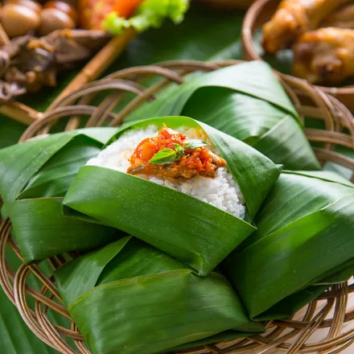
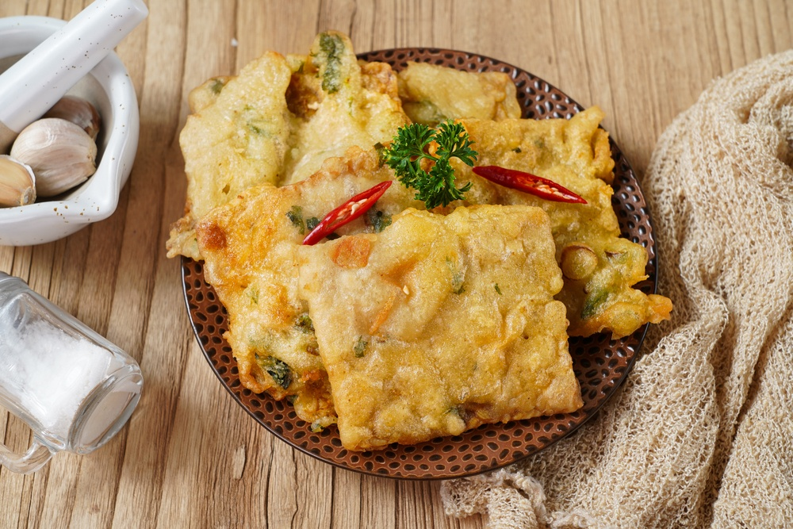
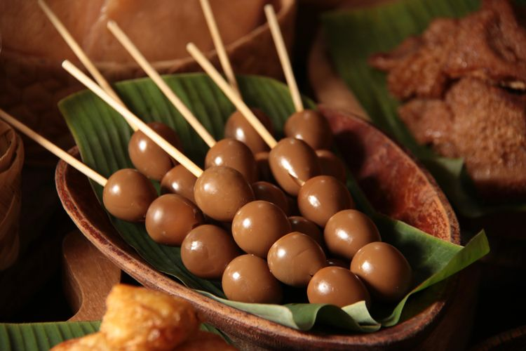
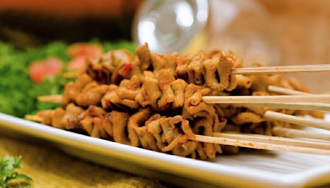
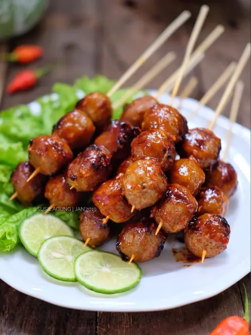
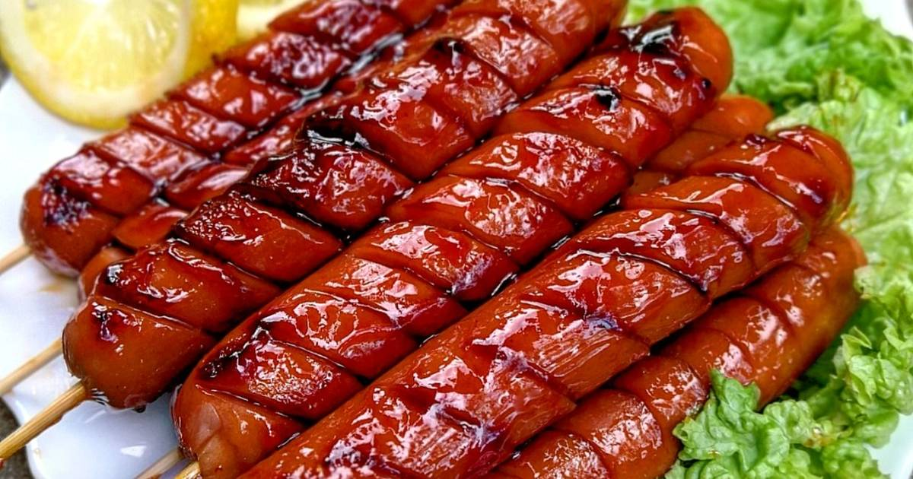
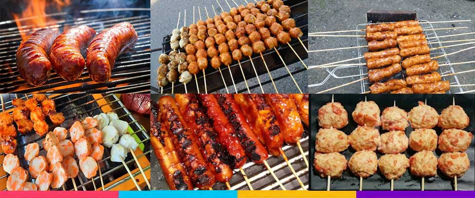

"Di Angkringan kami,Anda bisa memilih makanan dengan harga serba 5k"
NASI KUCING

"Jelajahi dunia rasa dalam setiap suap nasi kucing kami! Kelezatan yang tak terlupakan dan
harga spesial hanya untuk Anda. Segera kunjungi kami dan nikmati sensasi cita rasa yang unik.
Nasi kucing terbaik, dengan harga terbaik hanya di sini!"
GORENGAN TEMPE

Gorengan kami bukan sekadar makanan ringan, tapi pesta rasa di setiap gigitan.
Crispy di luar, lembut di dalam, hadirkan kebahagiaan pada lidah Anda dengan koleksi gorengan kami yang tak tertandingi!!
Nikmati kenikmatan setiap saat!"
SATE TELUR PUYUH

"Sate telur puyuh, paduan lezat antara kekenyalan telur puyuh dan aroma harum rempah-rempah.
Setiap tusukan sate adalah petualangan cita rasa yang menggoda, memanjakan lidah Anda dengan kelezatan yang tak terlupakan.
Mari merayakan sensasi unik sate telur puyuh bersama kami!"
SATE USUS

"Mengundang selera dengan sate usus istimewa! Kenikmatan lembutnya usus dipadu dengan keharuman rempah pilihan. Jangan lewatkan kesempatan menikmati cita rasa istimewa dalam setiap tusukannya.
Sate usus yang luar biasa, hanya di sini!"
BAKSO BAKAR

"Bakso bakar, harmoni gurih bakso yang lembut dipadu dengan aroma bakar yang memikat. Setiap suapan adalah perjalanan nikmat, menggoda selera dengan kelezatan yang menghangatkan hati.
Temukan sensasi tak terlupakan dalam setiap gigitan bakso bakar kami!"
SOSIS BAKAR

"Sosis bakar, perpaduan sempurna antara kekenyalan sosis dan kecoklatan menggoda dari panggangan. Rasakan ledakan rasa dalam setiap gigitan, mengajak lidah Anda merayakan sensasi cita rasa yang unik.
Nikmati kelezatan sosis bakar yang memikat, siap memanjakan selera Anda!"
SEAFOOD BAKAR

"Seafood bakar, pesta rasa laut dalam setiap suapannya! Kelezatan ikan, udang, dan kerang yang dipanggang sempurna dengan rempah pilihan. Setiap gigitan adalah perjalanan cita rasa yang memikat, mengajak Anda menyelami kenikmatan laut yang tiada tanding.
Segera nikmati seafood bakar kami, karena setiap gigitan adalah petualangan baru!"
Beberapa makanan yang ada di angkringan kami bisa anda nikmati sesuai selera!!!